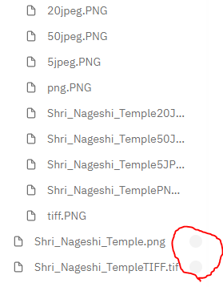

This website was made to illustrate the implications of compression in terms of file size and quality. To do this, I saved the same image in multiple file formats (TIFF, PNG, 50% quality JPG, 20% quality JPG and 5% quality JPG and looked at the metadata of the image.

From my observations, I was able to see that the uncompressed formats tended to have larger file sizes than the compressed ones. Tiff formats don't have too significant an impact on file size as it only reduced by 0.1 MB, whilst other formats like PNG and JPEG have drastically reduced it.
The difference in degree of compression between the compressed formats could be due to compression type, as PNG is a lossless format it tends to have greater file sizes so it can be reverted back to the original format and keep quality. The JPGs are lossy format, which attempts to reduce the file size as much as possible. This explains why the 50% JPG has a larger file size than the 5% JPG, as it has to preserve more data to keep a better quality.

As i learnt from this project, images need to be compressed due to upload times. Compression's main purpose is to reduce the file size of a document whether it be an image or a sound file. This is beneficial if you are storing files, as if it has a lower file size it requires less space to store it, leaving you with more storage space allowing you to store more files as a result. Additionally, as I definitely saw from this project, files with larger file size take signficiantly longer to download and upload compared to smaller files. This is as it requires more bandwidth to do so, and this extra bandwidth can't always be allocated, which could result in really longggggggggg transfer times and as a result long wait times. Notice how the uncompressed files are the only files to not have fully uploaded, and that they took so long to upload (and still haven't even shown progess after a few days) I just downloaded all my images and code and decided to use visual studio code instead and host it on github.
In terms of quality, it was clear that the larger files tended to have higher quality. Below I show the difference between the smallest file (5% quality JPG), 20% and 50% JPG, the PNG file and the TIFF file. From this, I can infer that compression comes at a cost of quality, and to best benefit from you need to choose an ideal file extension that fits what you need it for (e.g. text will need to be compressed less than sound as you the loss in quality is far more noticible to the human senses). You'll seem to notice that the larger the file gets, the better the quality is.